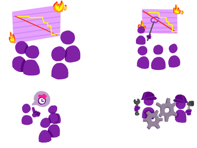

Pilares do Scrum
Transparência
A transparência é algo fundamental no Scrum, então todos os processos devem estar visíveis a todos os integrantes no processo de criação. Para esse processo ocorrer, o time deve estar com todas as definições em mente, como a Definição de Pronto(Definition of Done), que deve ser definida e compartilhada com o grupo para um entendimento mútuo.Inspeção e adaptação
É um método de controle empírico de processos, ou seja, testando e validando as teorias e hipóteses do projeto, ele deve ser inspecionado regularmente, seja para detectar problemas ou verificar o andamento do projeto.Quando a inspeção detectar algum problema ou melhoria para o processo, é necessário que se façam adaptações rápidas para manter ou elevar a produtividade do time e a qualidade do produto.
O Scrum possui Eventos para essa adaptação:
- Daily Scrum
- Sprint Planning Meeting
- Sprint Review
- Sprint Retrospective
